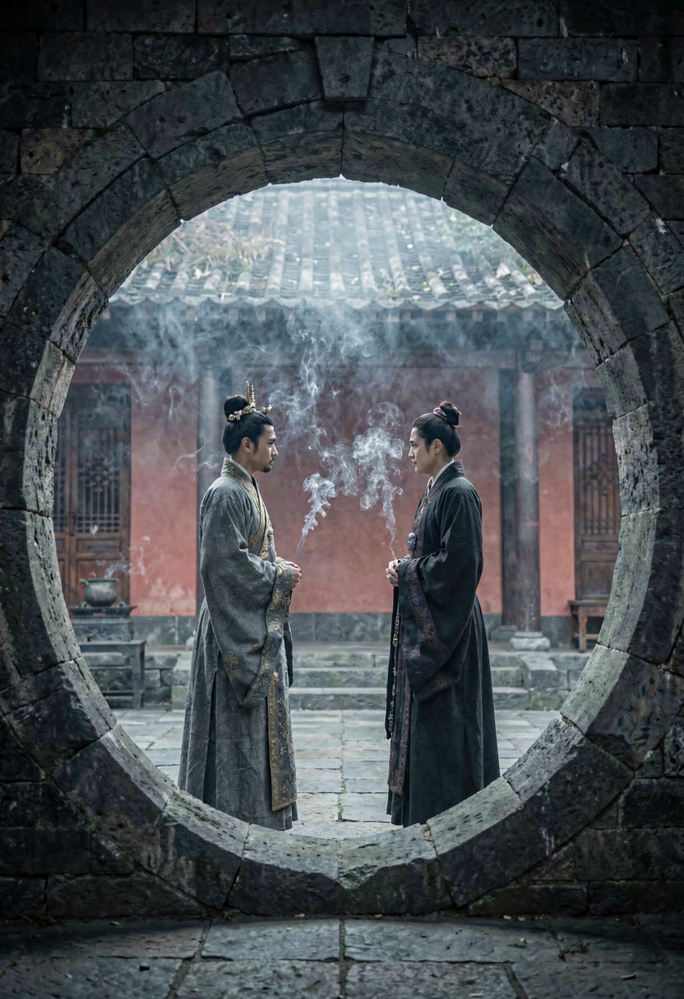
v1_01.png
a cinematic Chinese ancient drama scene, framed by a circular stone archway, two characters in traditional robes facing each other inside an old temple courtyard with incense smoke, muted gray-blue tones contrasted with warm red walls, soft diffused lighting, atmospheric haze, incense smoke, cinematic, high detail, 8k, photorealistic
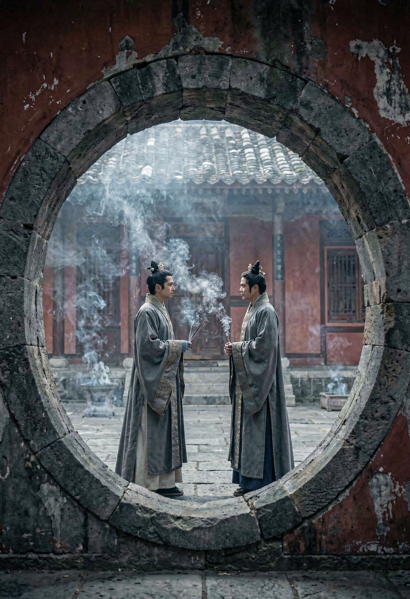
v1_02.png
a cinematic Chinese ancient drama scene, framed by a circular stone archway, two characters in traditional robes facing each other inside an old temple courtyard with incense smoke, muted gray-blue tones contrasted with warm red walls, soft diffused lighting, atmospheric haze, incense smoke, cinematic, high detail, 8k, photorealistic
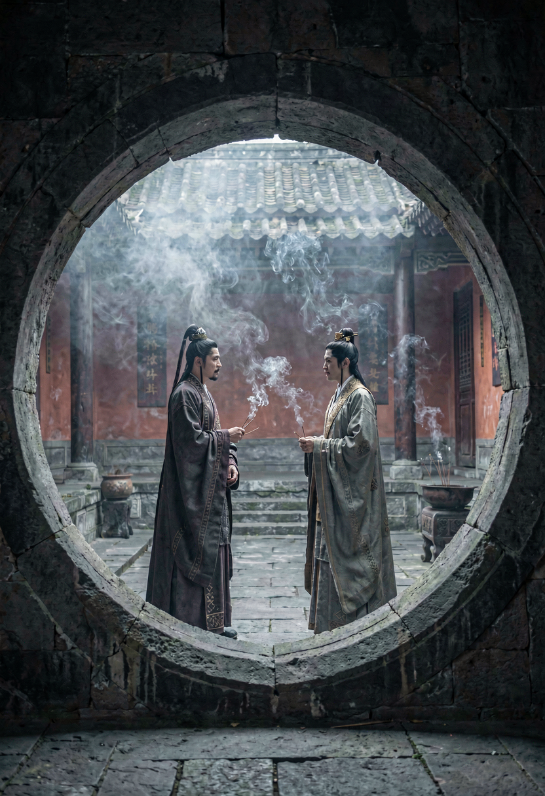
v1_03.png
a cinematic Chinese ancient drama scene, framed by a circular stone archway, two characters in traditional robes facing each other inside an old temple courtyard with incense smoke, muted gray-blue tones contrasted with warm red walls, soft diffused lighting, atmospheric haze, incense smoke, cinematic, high detail, 8k, photorealistic
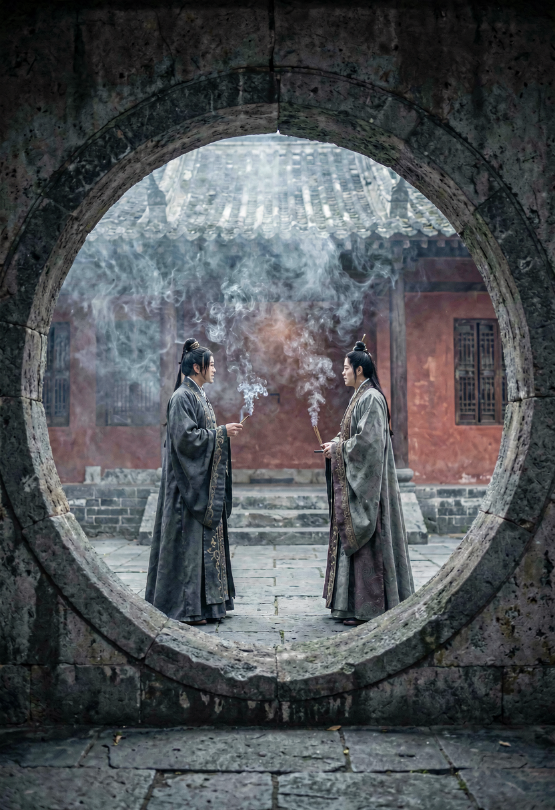
v1_04.png
a cinematic Chinese ancient drama scene, framed by a circular stone archway, two characters in traditional robes facing each other inside an old temple courtyard with incense smoke, muted gray-blue tones contrasted with warm red walls, soft diffused lighting, atmospheric haze, incense smoke, cinematic, high detail, 8k, photorealistic
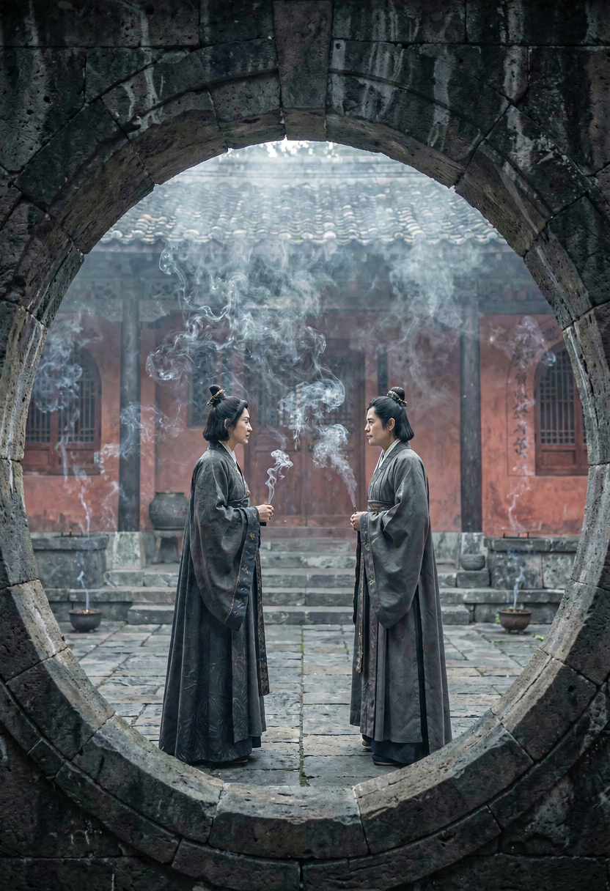
v1_05.png
a cinematic Chinese ancient drama scene, framed by a circular stone archway, two characters in traditional robes facing each other inside an old temple courtyard with incense smoke, muted gray-blue tones contrasted with warm red walls, soft diffused lighting, atmospheric haze, incense smoke, cinematic, high detail, 8k, photorealistic
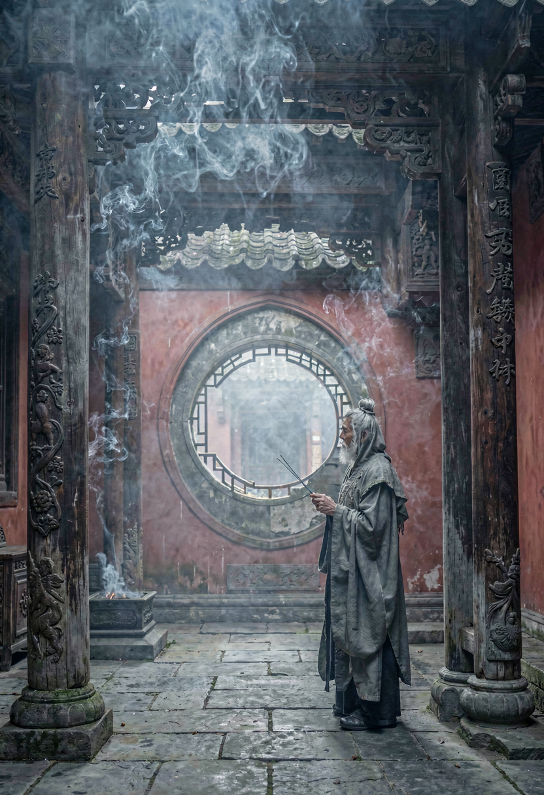
v2_01.png
a Chinese ancient courtyard with a moon gate, a robed figure standing, wooden carvings on pillars, incense smoke drifting, muted gray-blue tones contrasted with warm red walls, soft diffused lighting, atmospheric haze, incense smoke, cinematic, high detail, 8k, photorealistic
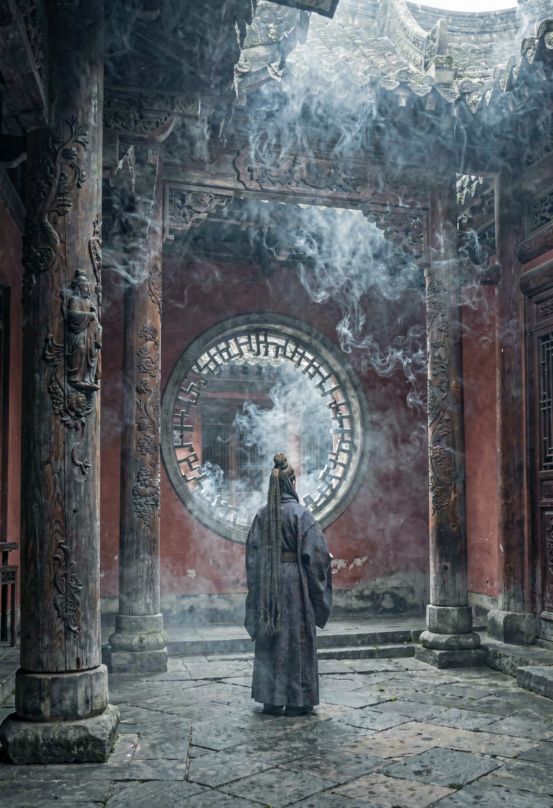
v2_02.png
a Chinese ancient courtyard with a moon gate, a robed figure standing, wooden carvings on pillars, incense smoke drifting, muted gray-blue tones contrasted with warm red walls, soft diffused lighting, atmospheric haze, incense smoke, cinematic, high detail, 8k, photorealistic
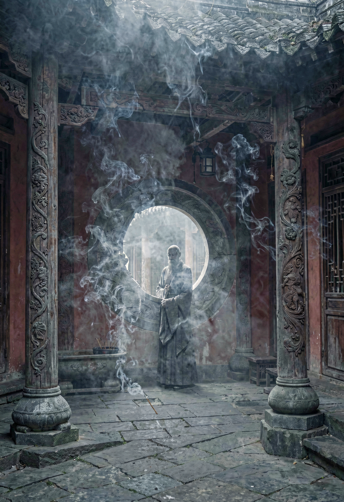
v2_03.png
a Chinese ancient courtyard with a moon gate, a robed figure standing, wooden carvings on pillars, incense smoke drifting, muted gray-blue tones contrasted with warm red walls, soft diffused lighting, atmospheric haze, incense smoke, cinematic, high detail, 8k, photorealistic
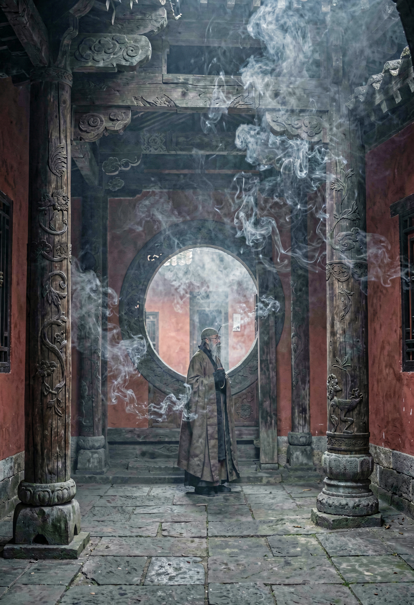
v2_04.png
a Chinese ancient courtyard with a moon gate, a robed figure standing, wooden carvings on pillars, incense smoke drifting, muted gray-blue tones contrasted with warm red walls, soft diffused lighting, atmospheric haze, incense smoke, cinematic, high detail, 8k, photorealistic
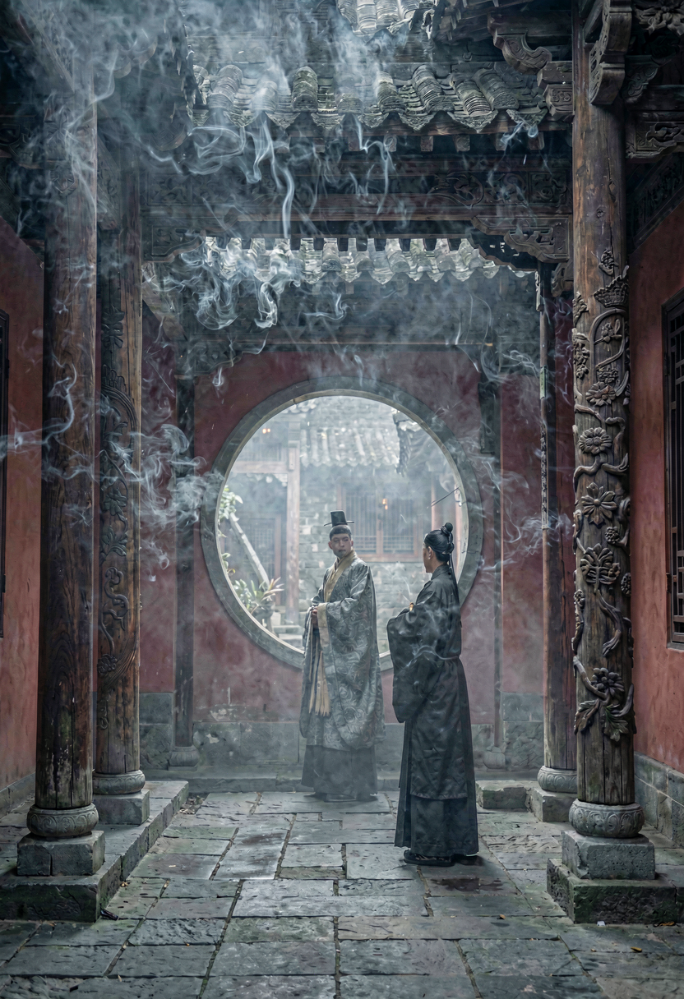
v2_05.png
a Chinese ancient courtyard with a moon gate, a robed figure standing, wooden carvings on pillars, incense smoke drifting, muted gray-blue tones contrasted with warm red walls, soft diffused lighting, atmospheric haze, incense smoke, cinematic, high detail, 8k, photorealistic
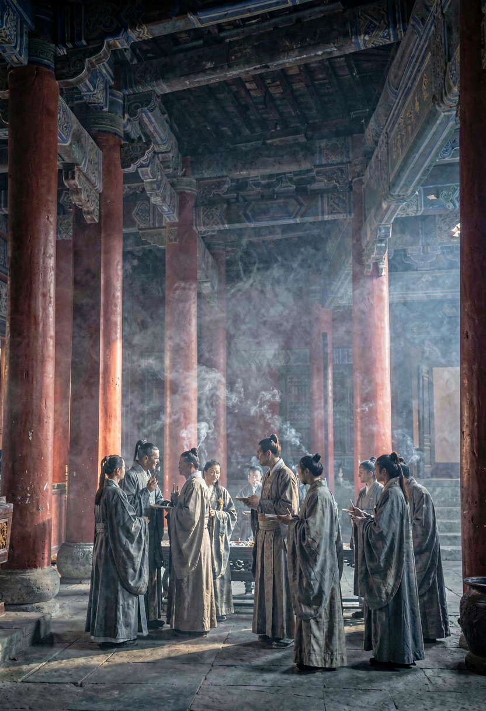
v3_01.png
an ancient Chinese temple hall interior, robed figures in conversation, warm red columns against gray-blue shadow, incense haze, muted gray-blue tones contrasted with warm red walls, soft diffused lighting, atmospheric haze, incense smoke, cinematic, high detail, 8k, photorealistic
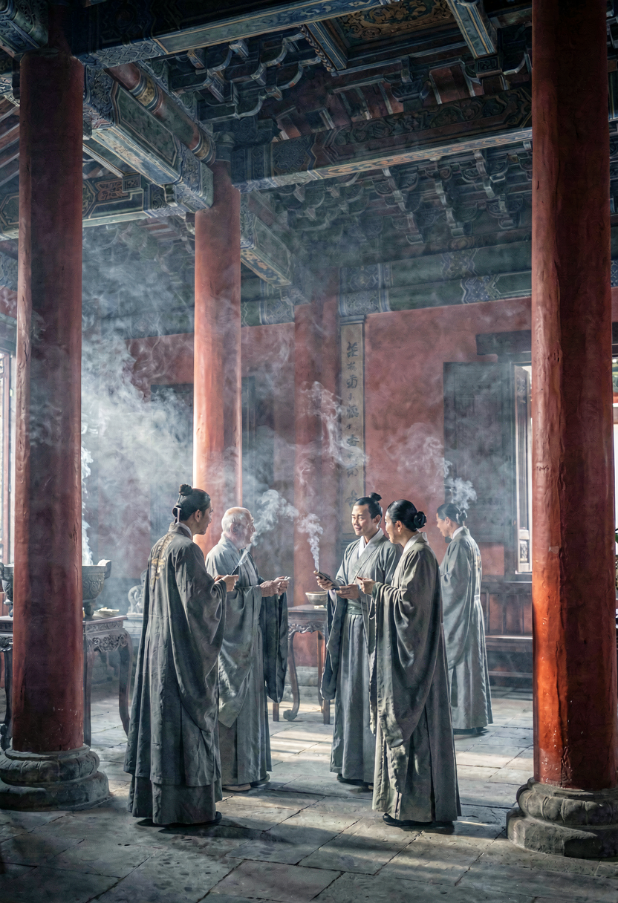
v3_02.png
an ancient Chinese temple hall interior, robed figures in conversation, warm red columns against gray-blue shadow, incense haze, muted gray-blue tones contrasted with warm red walls, soft diffused lighting, atmospheric haze, incense smoke, cinematic, high detail, 8k, photorealistic
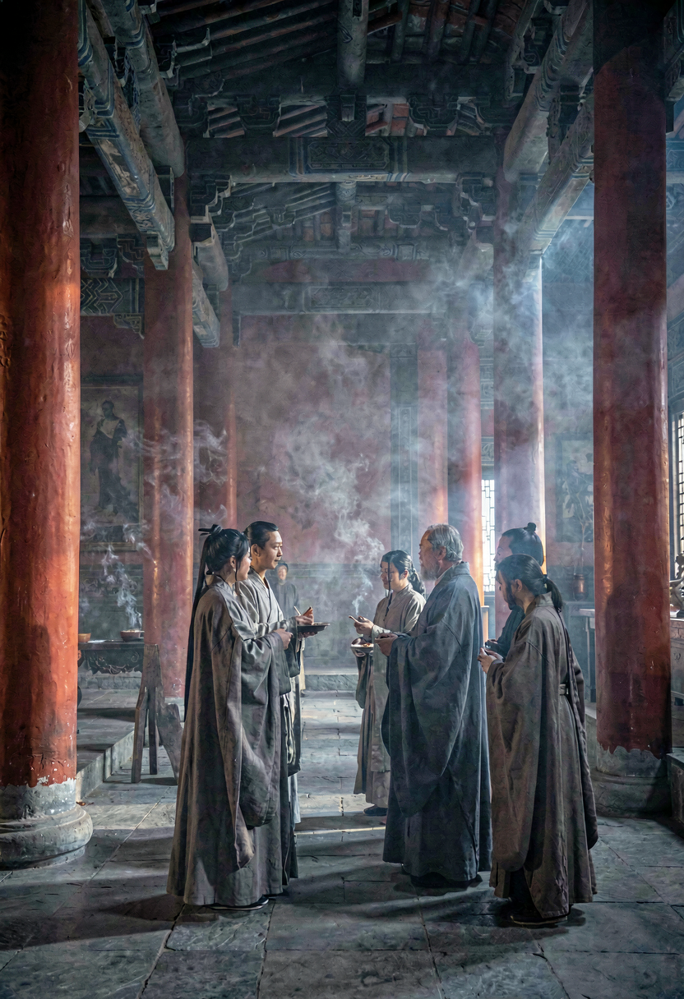
v3_03.png
an ancient Chinese temple hall interior, robed figures in conversation, warm red columns against gray-blue shadow, incense haze, muted gray-blue tones contrasted with warm red walls, soft diffused lighting, atmospheric haze, incense smoke, cinematic, high detail, 8k, photorealistic
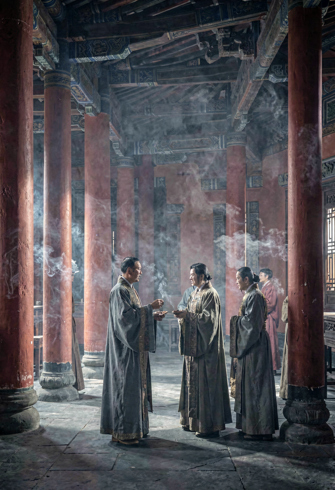
v3_04.png
an ancient Chinese temple hall interior, robed figures in conversation, warm red columns against gray-blue shadow, incense haze, muted gray-blue tones contrasted with warm red walls, soft diffused lighting, atmospheric haze, incense smoke, cinematic, high detail, 8k, photorealistic
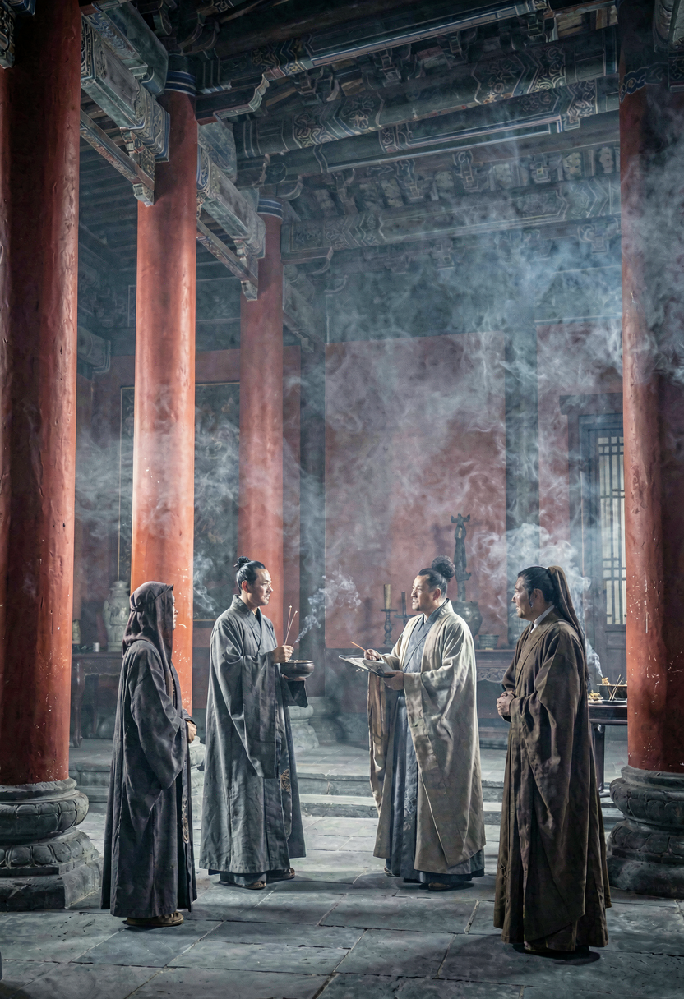
v3_05.png
an ancient Chinese temple hall interior, robed figures in conversation, warm red columns against gray-blue shadow, incense haze, muted gray-blue tones contrasted with warm red walls, soft diffused lighting, atmospheric haze, incense smoke, cinematic, high detail, 8k, photorealistic
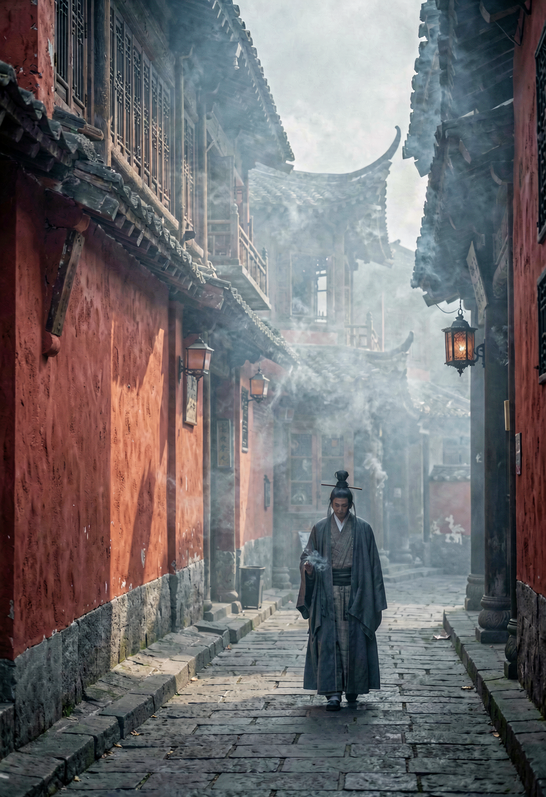
v4_01.png
a Chinese ancient street with warm red walls and gray-blue shadow, a robed figure walking, atmospheric haze, muted gray-blue tones contrasted with warm red walls, soft diffused lighting, atmospheric haze, incense smoke, cinematic, high detail, 8k, photorealistic
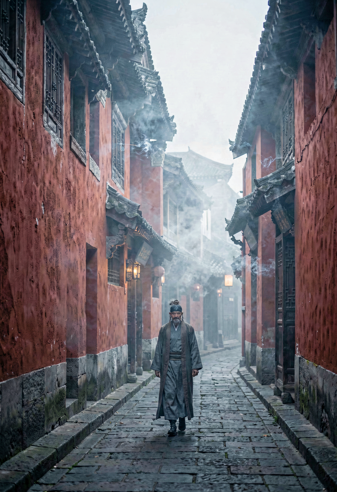
v4_02.png
a Chinese ancient street with warm red walls and gray-blue shadow, a robed figure walking, atmospheric haze, muted gray-blue tones contrasted with warm red walls, soft diffused lighting, atmospheric haze, incense smoke, cinematic, high detail, 8k, photorealistic
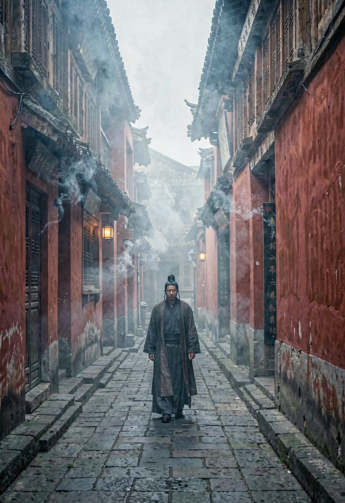
v4_03.png
a Chinese ancient street with warm red walls and gray-blue shadow, a robed figure walking, atmospheric haze, muted gray-blue tones contrasted with warm red walls, soft diffused lighting, atmospheric haze, incense smoke, cinematic, high detail, 8k, photorealistic
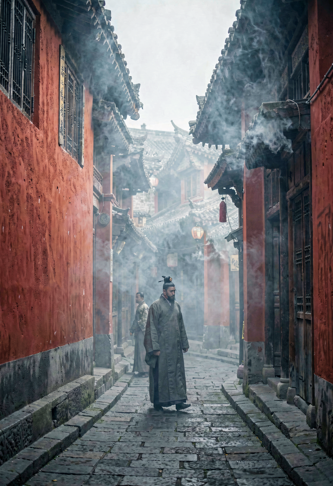
v4_04.png
a Chinese ancient street with warm red walls and gray-blue shadow, a robed figure walking, atmospheric haze, muted gray-blue tones contrasted with warm red walls, soft diffused lighting, atmospheric haze, incense smoke, cinematic, high detail, 8k, photorealistic
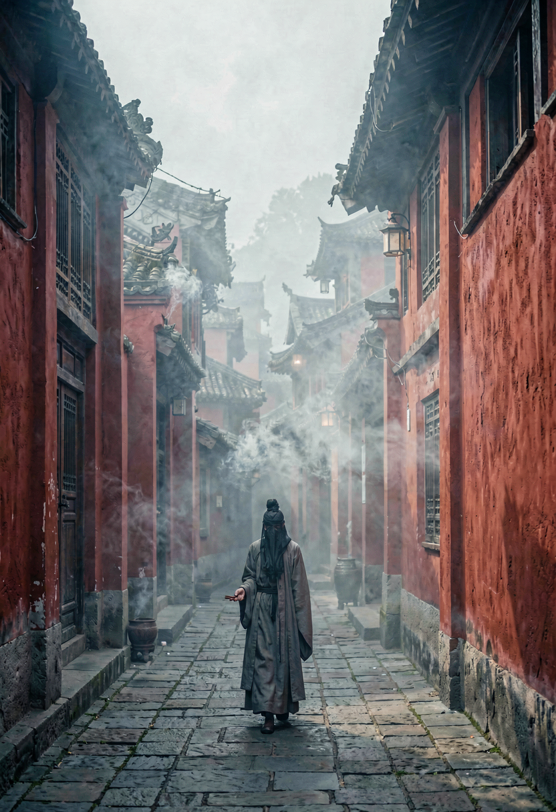
v4_05.png
a Chinese ancient street with warm red walls and gray-blue shadow, a robed figure walking, atmospheric haze, muted gray-blue tones contrasted with warm red walls, soft diffused lighting, atmospheric haze, incense smoke, cinematic, high detail, 8k, photorealistic